met <- read.csv("C:/Temp/met_all.gz")biostat-620-lab-3
1. Read in the data
3. Take a look at all of the variables
str(met)'data.frame': 2377343 obs. of 30 variables:
$ USAFID : int 690150 690150 690150 690150 690150 690150 690150 690150 690150 690150 ...
$ WBAN : int 93121 93121 93121 93121 93121 93121 93121 93121 93121 93121 ...
$ year : int 2019 2019 2019 2019 2019 2019 2019 2019 2019 2019 ...
$ month : int 8 8 8 8 8 8 8 8 8 8 ...
$ day : int 1 1 1 1 1 1 1 1 1 1 ...
$ hour : int 0 1 2 3 4 5 6 7 8 9 ...
$ min : int 56 56 56 56 56 56 56 56 56 56 ...
$ lat : num 34.3 34.3 34.3 34.3 34.3 34.3 34.3 34.3 34.3 34.3 ...
$ lon : num -116 -116 -116 -116 -116 ...
$ elev : int 696 696 696 696 696 696 696 696 696 696 ...
$ wind.dir : int 220 230 230 210 120 NA 320 10 320 350 ...
$ wind.dir.qc : chr "5" "5" "5" "5" ...
$ wind.type.code : chr "N" "N" "N" "N" ...
$ wind.sp : num 5.7 8.2 6.7 5.1 2.1 0 1.5 2.1 2.6 1.5 ...
$ wind.sp.qc : chr "5" "5" "5" "5" ...
$ ceiling.ht : int 22000 22000 22000 22000 22000 22000 22000 22000 22000 22000 ...
$ ceiling.ht.qc : int 5 5 5 5 5 5 5 5 5 5 ...
$ ceiling.ht.method: chr "9" "9" "9" "9" ...
$ sky.cond : chr "N" "N" "N" "N" ...
$ vis.dist : int 16093 16093 16093 16093 16093 16093 16093 16093 16093 16093 ...
$ vis.dist.qc : chr "5" "5" "5" "5" ...
$ vis.var : chr "N" "N" "N" "N" ...
$ vis.var.qc : chr "5" "5" "5" "5" ...
$ temp : num 37.2 35.6 34.4 33.3 32.8 31.1 29.4 28.9 27.2 26.7 ...
$ temp.qc : chr "5" "5" "5" "5" ...
$ dew.point : num 10.6 10.6 7.2 5 5 5.6 6.1 6.7 7.8 7.8 ...
$ dew.point.qc : chr "5" "5" "5" "5" ...
$ atm.press : num 1010 1010 1011 1012 1013 ...
$ atm.press.qc : int 5 5 5 5 5 5 5 5 5 5 ...
$ rh : num 19.9 21.8 18.5 16.9 17.4 ...From the results of str(), we see that “met” is a ‘data.frame’ object with numerous variables of types “int” (integer), “num” (double), and “chr” (string). We see that the wind.dir column has at least one missing value (NA).
Some of the variables appear to all be very similar to one another (e.g. USAFID, WBAN, year, ceiling.ht, vis.dist), but we cannot generalize this conclusion to the whole dataset without making a table or visualization of each variable.
4. Take a closer look at the key variables (year, day, hour, temp, elev, wind.sp)
summary(met$year) Min. 1st Qu. Median Mean 3rd Qu. Max.
2019 2019 2019 2019 2019 2019 This shows that the entire dataset was collected in the year 2019.
summary(met$hour) Min. 1st Qu. Median Mean 3rd Qu. Max.
0.00 5.00 11.00 11.34 17.00 23.00 table(met$hour)
0 1 2 3 4 5 6 7 8 9 10
99434 93482 93770 96703 110504 112128 106235 101985 100310 102915 101880
11 12 13 14 15 16 17 18 19 20 21
100470 103605 97004 96507 97635 94942 94184 100179 94604 94928 96070
22 23
94046 93823 This shows that (as one would expect) the “hour” variable keeps track of the hour of the day (from 0:00 to 23:00) at which the observation is recorded. The most common times to record observations are from 4:00 (4 AM) to 12:00 (12 PM), and less observations are recorded late at night (7 PM to 3 AM).
summary(met$temp) Min. 1st Qu. Median Mean 3rd Qu. Max. NA's
-40.00 19.60 23.50 23.59 27.80 56.00 60089 According to the Mandatory Data Section of the data dictionary, we see that temperatures are reported in degrees Celsius. The minimum temperature of -40 degrees Celsius is too cold to be a reasonable measurement.
summary(met$elev) Min. 1st Qu. Median Mean 3rd Qu. Max.
-13.0 101.0 252.0 415.8 400.0 9999.0 We see that the maximum elevation is 9999, which is very unreasonable; reading the data document confirms that 9999 is used to indicate a missing value.
summary(met$wind.sp) Min. 1st Qu. Median Mean 3rd Qu. Max. NA's
0.000 0.000 2.100 2.459 3.600 36.000 79693 Here, we find that the maximum wind speed is much higher than the rest, which is suspicious.
5. Check the data against an external data source
To fix these issues, we first remove values of -40 and NA from the “temp” variable:
met <- met[!is.na(met$temp) & met$temp != -40, ]summary(met$temp) Min. 1st Qu. Median Mean 3rd Qu. Max.
-17.20 19.60 23.50 23.59 27.80 56.00 The coldest temperature is now -17.20 degrees Celsius, which is still suspicious. We see from examining all of the records with this tempreature value that they were recorded in month 8 (August).
met[!is.na(met$temp) & met$temp < 0, ] USAFID WBAN year month day hour min lat lon elev wind.dir
252417 720411 137 2019 8 17 12 35 36.422 -105.290 2554 NA
252480 720411 137 2019 8 18 9 35 36.422 -105.290 2554 240
252482 720411 137 2019 8 18 10 15 36.422 -105.290 2554 NA
252483 720411 137 2019 8 18 10 35 36.422 -105.290 2554 NA
252484 720411 137 2019 8 18 10 55 36.422 -105.290 2554 NA
252485 720411 137 2019 8 18 11 15 36.422 -105.290 2554 NA
252486 720411 137 2019 8 18 11 35 36.422 -105.290 2554 NA
252487 720411 137 2019 8 18 11 55 36.422 -105.290 2554 NA
252488 720411 137 2019 8 18 12 15 36.422 -105.290 2554 150
252489 720411 137 2019 8 18 12 35 36.422 -105.290 2554 NA
252490 720411 137 2019 8 18 12 55 36.422 -105.290 2554 NA
252998 720411 137 2019 8 25 12 15 36.422 -105.290 2554 NA
253000 720411 137 2019 8 25 12 55 36.422 -105.290 2554 NA
951475 722221 444 2019 8 27 12 30 41.037 -107.492 1996 130
1105455 722518 12974 2019 8 11 23 56 27.901 -98.052 78 150
1105457 722518 12974 2019 8 12 1 56 27.901 -98.052 78 150
1105459 722518 12974 2019 8 12 3 56 27.901 -98.052 78 160
1203053 722817 3068 2019 8 1 0 56 38.767 -104.300 1838 190
1203054 722817 3068 2019 8 1 1 6 38.767 -104.300 1838 180
1203055 722817 3068 2019 8 1 1 56 38.767 -104.300 1838 180
1203128 722817 3068 2019 8 3 11 56 38.767 -104.300 1838 NA
1203129 722817 3068 2019 8 3 12 56 38.767 -104.300 1838 NA
1203221 722817 3068 2019 8 6 21 39 38.767 -104.300 1838 210
1203222 722817 3068 2019 8 6 21 56 38.767 -104.300 1838 280
1203223 722817 3068 2019 8 6 22 32 38.767 -104.300 1838 260
1203224 722817 3068 2019 8 6 22 41 38.767 -104.300 1838 NA
1203225 722817 3068 2019 8 6 22 56 38.767 -104.300 1838 240
1203226 722817 3068 2019 8 6 23 3 38.767 -104.300 1838 210
1462938 723894 3181 2019 8 11 12 35 37.633 -118.850 2173 340
1462939 723894 3181 2019 8 11 12 55 37.633 -118.850 2173 NA
2091732 725846 93201 2019 8 11 12 55 39.320 -120.139 1798 NA
2356459 726664 94173 2019 8 26 12 56 44.544 -110.421 2388 NA
2356482 726664 94173 2019 8 27 10 56 44.544 -110.421 2388 NA
2356483 726664 94173 2019 8 27 11 56 44.544 -110.421 2388 310
2356484 726664 94173 2019 8 27 12 56 44.544 -110.421 2388 NA
2367816 726710 24164 2019 8 28 12 53 42.584 -110.107 2126 NA
2370112 726764 94163 2019 8 18 11 50 44.683 -111.116 2025 NA
2370113 726764 94163 2019 8 18 12 10 44.683 -111.116 2025 NA
2370114 726764 94163 2019 8 18 12 25 44.683 -111.116 2025 NA
2370115 726764 94163 2019 8 18 12 50 44.683 -111.116 2025 NA
2370686 726764 94163 2019 8 26 11 45 44.683 -111.116 2025 NA
2370687 726764 94163 2019 8 26 12 10 44.683 -111.116 2025 NA
2370688 726764 94163 2019 8 26 12 30 44.683 -111.116 2025 NA
2370689 726764 94163 2019 8 26 12 50 44.683 -111.116 2025 NA
2370690 726764 94163 2019 8 26 13 10 44.683 -111.116 2025 NA
2370752 726764 94163 2019 8 27 9 45 44.683 -111.116 2025 NA
2370753 726764 94163 2019 8 27 10 10 44.683 -111.116 2025 NA
2370754 726764 94163 2019 8 27 10 30 44.683 -111.116 2025 NA
2370755 726764 94163 2019 8 27 10 50 44.683 -111.116 2025 40
2370756 726764 94163 2019 8 27 11 10 44.683 -111.116 2025 NA
2370757 726764 94163 2019 8 27 11 25 44.683 -111.116 2025 NA
2370758 726764 94163 2019 8 27 11 50 44.683 -111.116 2025 NA
2370759 726764 94163 2019 8 27 12 10 44.683 -111.116 2025 NA
2370760 726764 94163 2019 8 27 12 30 44.683 -111.116 2025 NA
2370761 726764 94163 2019 8 27 12 50 44.683 -111.116 2025 NA
2370762 726764 94163 2019 8 27 13 10 44.683 -111.116 2025 NA
2370763 726764 94163 2019 8 27 13 25 44.683 -111.116 2025 220
2370829 726764 94163 2019 8 28 11 30 44.683 -111.116 2025 NA
2370830 726764 94163 2019 8 28 11 50 44.683 -111.116 2025 NA
2370831 726764 94163 2019 8 28 12 10 44.683 -111.116 2025 NA
2370832 726764 94163 2019 8 28 12 30 44.683 -111.116 2025 NA
2370833 726764 94163 2019 8 28 12 45 44.683 -111.116 2025 NA
2370834 726764 94163 2019 8 28 13 10 44.683 -111.116 2025 NA
2370901 726764 94163 2019 8 29 11 30 44.683 -111.116 2025 210
2370902 726764 94163 2019 8 29 11 45 44.683 -111.116 2025 NA
2370903 726764 94163 2019 8 29 12 5 44.683 -111.116 2025 NA
2370904 726764 94163 2019 8 29 12 25 44.683 -111.116 2025 NA
2370905 726764 94163 2019 8 29 12 45 44.683 -111.116 2025 NA
2370906 726764 94163 2019 8 29 13 10 44.683 -111.116 2025 210
wind.dir.qc wind.type.code wind.sp wind.sp.qc ceiling.ht ceiling.ht.qc
252417 9 C 0.0 5 22000 5
252480 5 N 2.1 5 22000 5
252482 9 C 0.0 5 22000 5
252483 9 C 0.0 5 22000 5
252484 9 C 0.0 5 22000 5
252485 9 C 0.0 5 22000 5
252486 9 C 0.0 5 22000 5
252487 9 C 0.0 5 22000 5
252488 5 N 1.5 5 22000 5
252489 9 C 0.0 5 22000 5
252490 9 C 0.0 5 22000 5
252998 9 C 0.0 5 22000 5
253000 9 C 0.0 5 22000 5
951475 5 N 2.6 5 22000 5
1105455 1 N 8.8 1 22000 1
1105457 1 N 8.2 1 22000 1
1105459 1 N 5.1 1 22000 1
1203053 5 N 7.2 5 NA 9
1203054 5 N 5.1 5 NA 9
1203055 5 N 7.7 5 NA 9
1203128 9 C 0.0 5 NA 9
1203129 9 C 0.0 5 NA 9
1203221 5 N 1.5 5 NA 9
1203222 5 N 2.6 5 NA 9
1203223 5 V 11.8 5 NA 9
1203224 9 V 1.5 5 NA 9
1203225 5 N 7.7 5 NA 9
1203226 5 N 6.7 5 NA 9
1462938 5 N 1.5 5 22000 5
1462939 9 C 0.0 5 22000 5
2091732 9 C 0.0 5 152 5
2356459 9 C 0.0 5 NA 9
2356482 9 C 0.0 5 NA 9
2356483 5 N 1.5 5 NA 9
2356484 9 C 0.0 5 NA 9
2367816 9 C 0.0 5 22000 5
2370112 9 C 0.0 5 22000 5
2370113 9 C 0.0 5 22000 5
2370114 9 C 0.0 5 22000 5
2370115 9 C 0.0 5 22000 5
2370686 9 C 0.0 5 22000 5
2370687 9 C 0.0 5 22000 5
2370688 9 C 0.0 5 22000 5
2370689 9 C 0.0 5 22000 5
2370690 9 C 0.0 5 22000 5
2370752 9 C 0.0 5 22000 5
2370753 9 C 0.0 5 22000 5
2370754 9 C 0.0 5 22000 5
2370755 5 N 1.5 5 22000 5
2370756 9 C 0.0 5 22000 5
2370757 9 C 0.0 5 22000 5
2370758 9 C 0.0 5 22000 5
2370759 9 C 0.0 5 22000 5
2370760 9 C 0.0 5 22000 5
2370761 9 C 0.0 5 22000 5
2370762 9 C 0.0 5 22000 5
2370763 5 N 1.5 5 22000 5
2370829 9 C 0.0 5 22000 5
2370830 9 C 0.0 5 22000 5
2370831 9 C 0.0 5 22000 5
2370832 9 C 0.0 5 22000 5
2370833 9 C 0.0 5 22000 5
2370834 9 C 0.0 5 22000 5
2370901 5 N 1.5 5 22000 5
2370902 9 C 0.0 5 22000 5
2370903 9 C 0.0 5 22000 5
2370904 9 C 0.0 5 22000 5
2370905 9 C 0.0 5 22000 5
2370906 5 N 2.1 5 22000 5
ceiling.ht.method sky.cond vis.dist vis.dist.qc vis.var vis.var.qc
252417 9 N 16093 5 N 5
252480 9 N 16093 5 N 5
252482 9 N 16093 5 N 5
252483 9 N 16093 5 N 5
252484 9 N 16093 5 N 5
252485 9 N 16093 5 N 5
252486 9 N 16093 5 N 5
252487 9 N 16093 5 N 5
252488 9 N 16093 5 N 5
252489 9 N 16093 5 N 5
252490 9 N 16093 5 N 5
252998 9 N 16093 5 N 5
253000 9 N 16093 5 N 5
951475 9 N 16093 5 N 5
1105455 9 N NA 9 9 9
1105457 9 N NA 9 9 9
1105459 9 N NA 9 9 9
1203053 9 N NA 9 N 5
1203054 9 N NA 9 N 5
1203055 9 N NA 9 N 5
1203128 9 N NA 9 N 5
1203129 9 N NA 9 N 5
1203221 9 N NA 9 N 5
1203222 9 N NA 9 N 5
1203223 9 N NA 9 N 5
1203224 9 N NA 9 N 5
1203225 9 N NA 9 N 5
1203226 9 N NA 9 N 5
1462938 9 N 16093 5 N 5
1462939 9 N 16093 5 N 5
2091732 W N 805 5 N 5
2356459 9 N NA 7 N 5
2356482 9 N NA 7 N 5
2356483 9 N NA 7 N 5
2356484 9 N NA 7 N 5
2367816 9 N 16093 5 N 5
2370112 9 N 16093 5 N 5
2370113 9 N 16093 5 N 5
2370114 9 N 16093 5 N 5
2370115 9 N 16093 5 N 5
2370686 9 N 16093 5 N 5
2370687 9 N 16093 5 N 5
2370688 9 N 16093 5 N 5
2370689 9 N 16093 5 N 5
2370690 9 N 16093 5 N 5
2370752 9 N 16093 5 N 5
2370753 9 N 16093 5 N 5
2370754 9 N 16093 5 N 5
2370755 9 N 16093 5 N 5
2370756 9 N 16093 5 N 5
2370757 9 N 16093 5 N 5
2370758 9 N 16093 5 N 5
2370759 9 N 16093 5 N 5
2370760 9 N 16093 5 N 5
2370761 9 N 16093 5 N 5
2370762 9 N 16093 5 N 5
2370763 9 N 16093 5 N 5
2370829 9 N 16093 5 N 5
2370830 9 N 16093 5 N 5
2370831 9 N 16093 5 N 5
2370832 9 N 16093 5 N 5
2370833 9 N 16093 5 N 5
2370834 9 N 16093 5 N 5
2370901 9 N 16093 5 N 5
2370902 9 N 16093 5 N 5
2370903 9 N 16093 5 N 5
2370904 9 N 16093 5 N 5
2370905 9 N 16093 5 N 5
2370906 9 N 16093 5 N 5
temp temp.qc dew.point dew.point.qc atm.press atm.press.qc rh
252417 -0.2 5 -1.4 5 NA 9 91.73041
252480 -0.1 5 -2.3 5 NA 9 85.31366
252482 -0.8 5 -3.1 5 NA 9 84.61308
252483 -0.2 5 -2.7 5 NA 9 83.45283
252484 -0.2 5 -3.0 5 NA 9 81.63822
252485 -0.8 5 -3.2 5 NA 9 83.99394
252486 -0.6 5 -3.0 5 NA 9 84.01786
252487 -1.0 5 -3.0 5 NA 9 86.47400
252488 -1.0 5 -3.2 5 NA 9 85.21392
252489 -2.4 5 -3.7 5 NA 9 90.91475
252490 -0.8 5 -2.9 5 NA 9 85.86334
252998 -0.8 5 -2.2 5 NA 9 90.36750
253000 -0.1 5 -1.5 5 NA 9 90.41937
951475 -0.1 5 -6.4 5 NA 9 62.90558
1105455 -17.0 1 NA 9 1010.3 1 NA
1105457 -17.0 1 NA 9 1010.3 1 NA
1105459 -17.0 1 NA 9 1011.6 1 NA
1203053 -17.2 5 NA 9 NA 9 NA
1203054 -17.0 5 NA 9 NA 9 NA
1203055 -17.2 5 NA 9 NA 9 NA
1203128 -17.2 5 NA 9 NA 9 NA
1203129 -17.2 5 NA 9 NA 9 NA
1203221 -17.0 6 NA 9 NA 9 NA
1203222 -17.2 5 NA 9 NA 9 NA
1203223 -17.0 6 NA 9 NA 9 NA
1203224 -17.0 6 NA 9 NA 9 NA
1203225 -17.2 5 NA 9 NA 9 NA
1203226 -17.0 6 NA 9 NA 9 NA
1462938 -0.8 5 -4.1 5 NA 9 78.59767
1462939 -1.5 5 -4.5 5 NA 9 80.26033
2091732 -1.0 C -1.0 C NA 9 100.00000
2356459 -1.7 5 -2.8 5 1021.8 5 92.30620
2356482 -0.6 5 -2.2 5 1023.3 5 89.07677
2356483 -1.1 5 -2.8 5 1023.7 5 88.38577
2356484 -1.7 5 -3.3 5 1024.7 5 88.98380
2367816 -0.6 5 -4.4 5 1019.7 5 75.76745
2370112 -1.0 C -1.0 C NA 9 100.00000
2370113 -1.0 5 -1.0 5 NA 9 100.00000
2370114 -1.0 5 -1.0 5 NA 9 100.00000
2370115 -1.0 C -2.0 C NA 9 93.02209
2370686 -1.0 C -2.0 C NA 9 93.02209
2370687 -1.0 5 -3.0 5 NA 9 86.47400
2370688 -2.0 5 -3.0 5 NA 9 92.96690
2370689 -2.0 C -4.0 C NA 9 86.37048
2370690 -2.0 5 -3.0 5 NA 9 92.96690
2370752 -1.0 C -4.0 C NA 9 80.33283
2370753 -1.0 5 -3.0 5 NA 9 86.47400
2370754 -2.0 5 -4.0 5 NA 9 86.37048
2370755 -2.0 C -3.0 C NA 9 92.96690
2370756 -2.0 5 -4.0 5 NA 9 86.37048
2370757 -2.0 5 -4.0 5 NA 9 86.37048
2370758 -3.0 C -5.0 C NA 9 86.26537
2370759 -3.0 5 -4.0 5 NA 9 92.91083
2370760 -3.0 5 -4.0 5 NA 9 92.91083
2370761 -3.0 C -4.0 C NA 9 92.91083
2370762 -2.0 5 -4.0 5 NA 9 86.37048
2370763 -1.0 5 -3.0 5 NA 9 86.47400
2370829 -1.0 5 -4.0 5 NA 9 80.33283
2370830 -1.0 C -3.0 C NA 9 86.47400
2370831 -1.0 5 -4.0 5 NA 9 80.33283
2370832 -2.0 5 -5.0 5 NA 9 80.18729
2370833 -2.0 C -4.0 C NA 9 86.37048
2370834 -1.0 5 -4.0 5 NA 9 80.33283
2370901 -1.0 5 -4.0 5 NA 9 80.33283
2370902 -1.0 C -4.0 C NA 9 80.33283
2370903 -1.0 5 -4.0 5 NA 9 80.33283
2370904 -1.0 5 -4.0 5 NA 9 80.33283
2370905 -1.0 C -4.0 C NA 9 80.33283
2370906 -1.0 5 -4.0 5 NA 9 80.33283According to a National Weather Service page, the lowest minimum temperature for Midland, Texas in August is 52 degrees Fahrenheit, or 11.1 degrees Celsius.
Source: “August Daily Temperature Records And Averages.” National Weather Service (Weather.gov), Weather Forecast Office Midland/Odessa, n.d., https://www.weather.gov/maf/cli_maf_temp_august. Accessed 30 Jan. 2026.
Therefore, this value seems too unreasonable for temperatures in the US in August, so we remove all temperature values of -17 or less and check again:
met <- met[!is.na(met$temp) & met$temp > -17, ]summary(met$temp) Min. 1st Qu. Median Mean 3rd Qu. Max.
-3.00 19.60 23.50 23.59 27.80 56.00 met[!is.na(met$temp) & met$temp == 56, ] USAFID WBAN year month day hour min lat lon elev wind.dir
42403 720267 23224 2019 8 26 11 15 38.955 -121.081 467 NA
wind.dir.qc wind.type.code wind.sp wind.sp.qc ceiling.ht ceiling.ht.qc
42403 9 C 0 5 22000 5
ceiling.ht.method sky.cond vis.dist vis.dist.qc vis.var vis.var.qc temp
42403 9 N 16093 5 N 5 56
temp.qc dew.point dew.point.qc atm.press atm.press.qc rh
42403 5 NA 9 NA 9 NAThe minimum temperature is now much more reasonable, although the maximum should still be scrutinized. According to the World Meterological Organization, the highest temperature ever recorded on Earth was 56.7 degrees Celsius; however, this was recorded in Death Valley, California, which is in the US. Therefore, we leave the rest of the data as is.
Source: “Records of Weather and Climate Extremes Table.” World Meteorological Organization, 31 July 2025, https://wmo.int/files/records-of-weather-and-climate-extremes-table . Accessed 30 Jan. 2026.
Now, we replace values of 9999 in the “elev” variable with NA:
met$elev[met$elev == 9999] <- NAsummary(met$elev) Min. 1st Qu. Median Mean 3rd Qu. Max. NA's
-13.0 101.0 252.0 414.3 400.0 4113.0 182 We see from the summary of “elev” that the highest elevation (of 4,113 m) is still very large compared to the mean and median elevations.
hist(met$elev)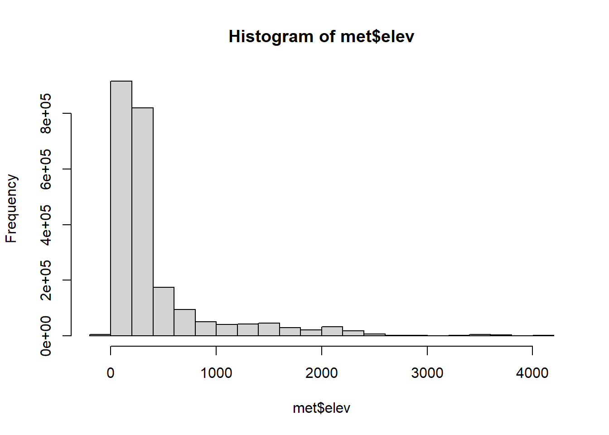
According to the histogram, all of the elevations in the data appear to make sense; a few negative elevations below sea level were recorded, but most of the observations were very close to sea level, which is to be expected for populated sites such as airports. The highest elevation (4,113 m) is plausible for stations at high altitudes such as mountainous regions. According to the U.S. Geological Survey, the highest altitude in the US is Denali in Alaska, which is 20,320 feet (or 6,193.54 m) above sea level, further corroborating the validity of the data.
Source: “Highest and Lowest Elevations.” U.S. Geological Survey, U.S. Geological Survey, n.d., https://www.usgs.gov/educational-resources/highest-and-lowest-elevations . Accessed 30 Jan. 2026.
6. Calculate summary statistics
We pick the weather station with maximum elevation:
met$station_id <- paste(met$USAFID, met$WBAN, sep = "-")max_elev <- max(met$elev, na.rm = TRUE)
top_station <- met$station_id[which(met$elev == max_elev)[1]]Within that station, we examine the correlation between temperature and wind speed:
elev <- met[met$station_id == top_station, ]
cor(elev$temp, elev$wind.sp, use = "complete.obs")[1] -0.1163212We find that this correlation is only slightly negative (i.e. wind.sp decreases only slightly as temperature decreases, but they are not closely correlated).
Now, we look at the correlations between temp, wind.sp, hour, and day:
c(
temp_wind = cor(elev$temp, elev$wind.sp, use = "complete.obs"),
temp_hour = cor(elev$temp, elev$hour, use = "complete.obs"),
wind_hour = cor(elev$wind.sp, elev$hour, use = "complete.obs"),
wind_day = cor(elev$wind.sp, elev$day, use = "complete.obs")
) temp_wind temp_hour wind_hour wind_day
-0.11632121 0.44209914 0.07249456 0.35034544 We find that the highest correlation is between temperature and hour, followed by wind speed and day. Temperature and wind speed (as well as wind speed and hour) do not appear to be highly correlated with each other.
7. Exploratory graphs
hist(met$elev, main = "Histogram of Elevations", xlab = "Elevation (m)")hist(met$temp, main = "Histogram of Temperatures", xlab = "Temperature (degrees Celsius)")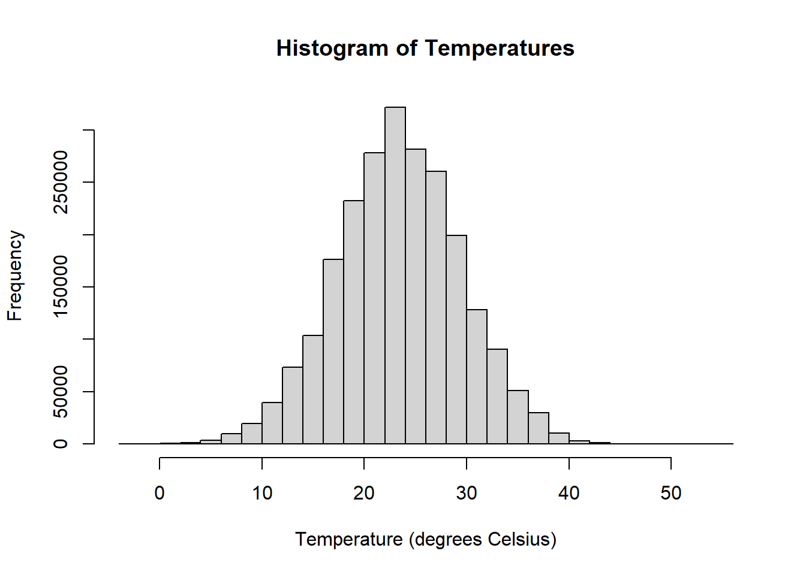
hist(met$wind.sp, main = "Histogram of Wind Speeds", xlab = "Wind Speed (m/s)")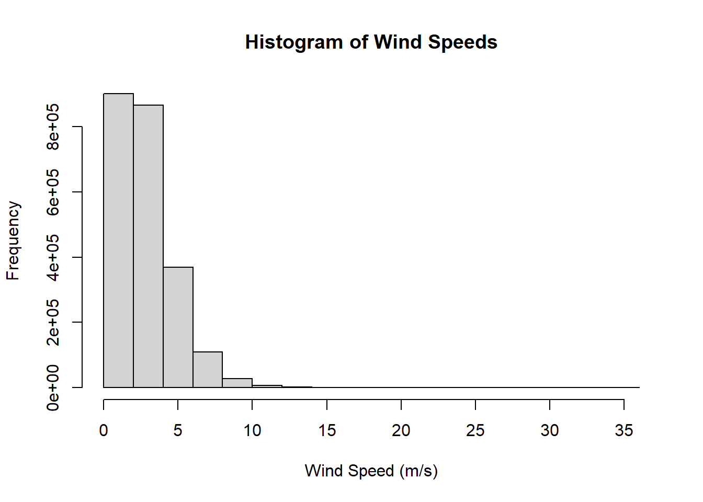
From the histograms, we find that most elevations are below 1,000 m (as validated previously), the temperatures are normally distributed around 25 degrees Celsius (which is roughly room temperature), and the wind speeds are mostly less than 5 meters per second. Thus, all of the data now appears reasonable.
We also look at the time series of temperature vs. wind speed:
library(dplyr)
Attaching package: 'dplyr'The following objects are masked from 'package:stats':
filter, lagThe following objects are masked from 'package:base':
intersect, setdiff, setequal, unionlibrary(leaflet)
leaflet(elev) %>%
addProviderTiles('OpenStreetMap') %>%
addCircles(lat=~lat,lng=~lon, opacity=1, fillOpacity=1, radius=100)library(lubridate)
Attaching package: 'lubridate'The following objects are masked from 'package:base':
date, intersect, setdiff, unionelev$date <- with(elev, ymd_h(paste(year, month, day, hour, sep= ' ')))
summary(elev$date) Min. 1st Qu. Median
"2019-08-01 00:00:00" "2019-08-08 17:00:00" "2019-08-16 11:30:00"
Mean 3rd Qu. Max.
"2019-08-16 11:35:23" "2019-08-24 05:45:00" "2019-08-31 23:00:00" elev <- elev[order(elev$date), ]
head(elev) USAFID WBAN year month day hour min lat lon elev wind.dir
221697 720385 419 2019 8 1 0 36 39.8 -105.766 4113 170
221698 720385 419 2019 8 1 0 54 39.8 -105.766 4113 100
221699 720385 419 2019 8 1 1 12 39.8 -105.766 4113 90
221700 720385 419 2019 8 1 1 35 39.8 -105.766 4113 110
221701 720385 419 2019 8 1 1 53 39.8 -105.766 4113 120
221702 720385 419 2019 8 1 2 12 39.8 -105.766 4113 120
wind.dir.qc wind.type.code wind.sp wind.sp.qc ceiling.ht ceiling.ht.qc
221697 5 N 8.8 5 1372 5
221698 5 N 2.6 5 1372 5
221699 5 N 3.1 5 1981 5
221700 5 N 4.1 5 2134 5
221701 5 N 4.6 5 2134 5
221702 5 N 6.2 5 22000 5
ceiling.ht.method sky.cond vis.dist vis.dist.qc vis.var vis.var.qc temp
221697 M N NA 9 N 5 9
221698 M N NA 9 N 5 9
221699 M N NA 9 N 5 9
221700 M N NA 9 N 5 9
221701 M N NA 9 N 5 9
221702 9 N NA 9 N 5 9
temp.qc dew.point dew.point.qc atm.press atm.press.qc rh
221697 5 1 5 NA 9 57.61039
221698 5 1 5 NA 9 57.61039
221699 5 2 5 NA 9 61.85243
221700 5 2 5 NA 9 61.85243
221701 5 2 5 NA 9 61.85243
221702 5 2 5 NA 9 61.85243
station_id date
221697 720385-419 2019-08-01 00:00:00
221698 720385-419 2019-08-01 00:00:00
221699 720385-419 2019-08-01 01:00:00
221700 720385-419 2019-08-01 01:00:00
221701 720385-419 2019-08-01 01:00:00
221702 720385-419 2019-08-01 02:00:00plot(elev$date, elev$temp, main = "Temperature Time-Series Plot for Highest-Elevation Station", xlab = "Date", ylab = "Temperature (degrees Celsius)")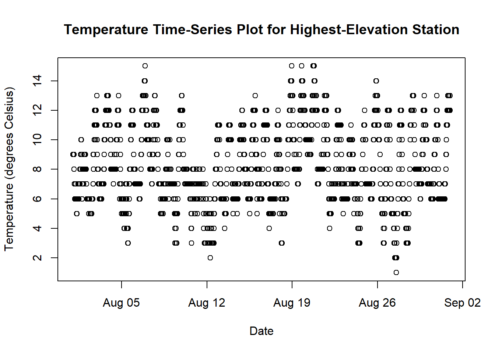
From this time-series plot, we find that the temperature tends to oscillate from day to day and does not generally increase or decrease, which is to be expected. However, the coldest points in the series are around August 12, 18, and 28, which are especially low temperatures of less than 4 degrees Celsius.
plot(elev$date, elev$wind.sp, main = "Wind Speed Time-Series Plot for Highest-Elevation Station", xlab = "Date", ylab = "Wind Speed (m/s)")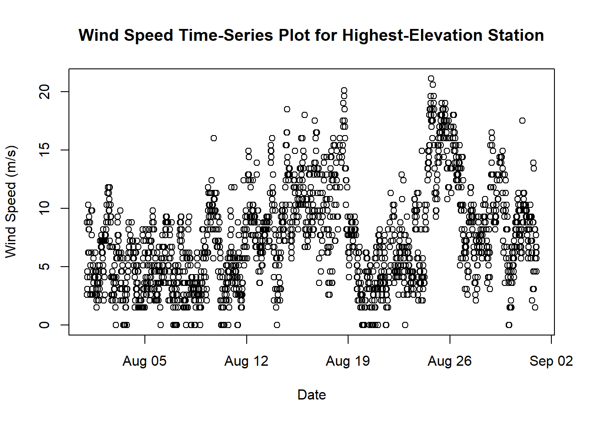
For this time-series plot, we find that the general trend of wind speed increased gradually from August 1st to 19th, but dropped sharped on August 19th before climbing to a high of over 20 m/s on August 26; the wind speed then decreased until September.
8. Ask questions
Here are some additional specific exploratory questions I had about this data:
Which hours in the day have the most recorded observations?
barplot(table(met$hour), main = "Counts by hour")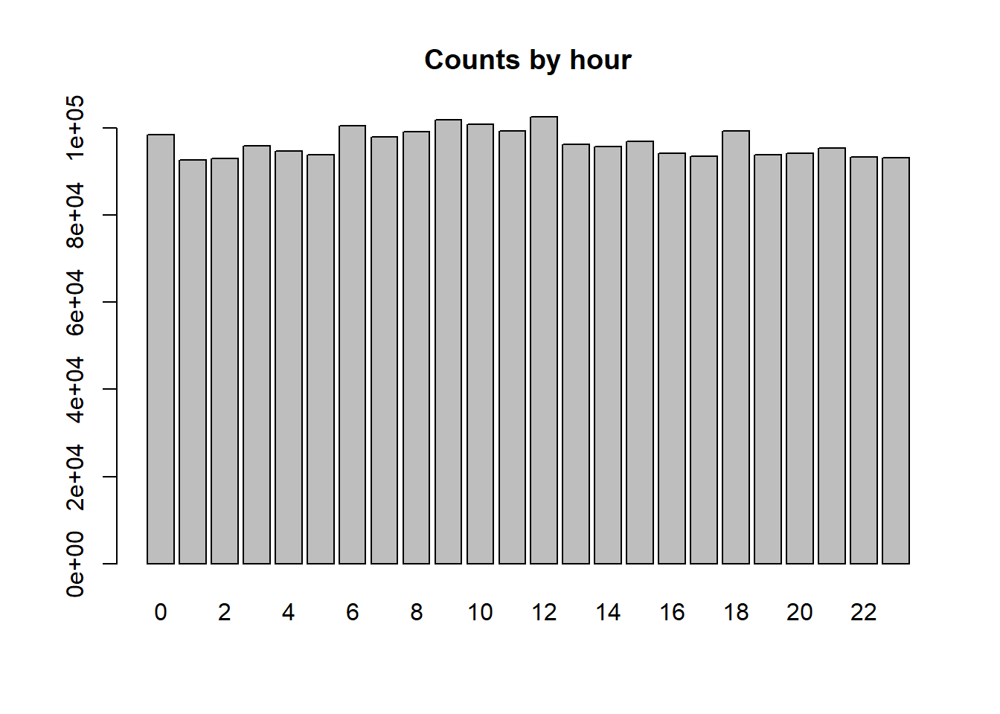
barplot(table(met$day), main = "Counts by day of month")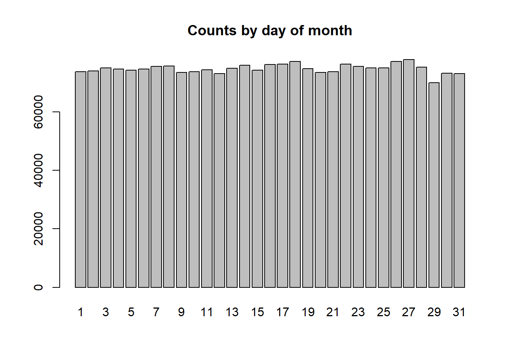
These bar graphs show that the measurements per hour in a day and per day in a month are fairly evenly distributed, although there seems to be a small drop in observations on the 29th day of the month on average.
How does the average temperature vary per the hour at which it was recorded?
plot(tapply(met$temp, met$hour, mean, na.rm = TRUE), type = "l", xlab = "Hour", ylab = "Mean Temperature")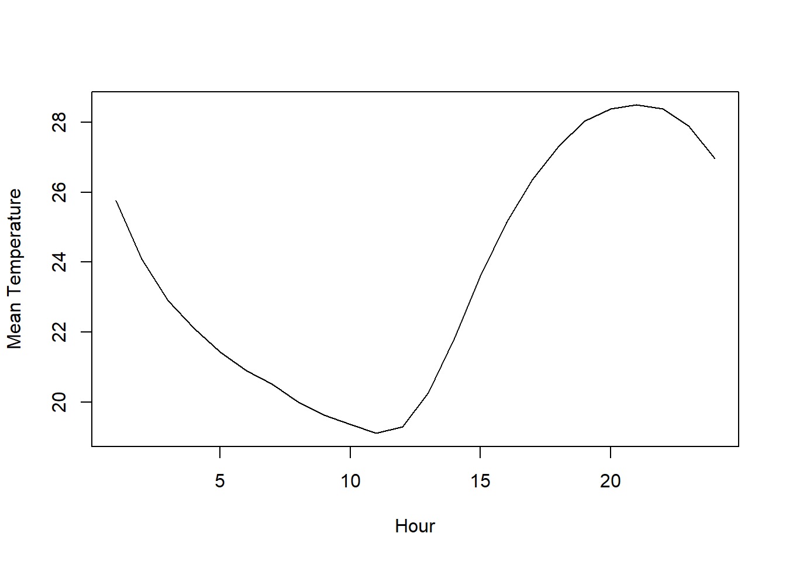
We find that the average temperature is lowest (20 degrees Celsius) at hour 12, which corresponds to noon in UTC. This appears to not make sense, but the time zones in the US are significantly shifted from UTC; what is most important is the general oscillation of temperature for each hour in the day, which is expected.
What about the average wind speed per hour recorded?
plot(tapply(met$wind.sp, met$hour, mean, na.rm = TRUE), type = "l", xlab = "Hour", ylab = "Mean Wind Speed")
This plot shows that the wind speed oscillates in the same way as temperature, which is also expected.
plot(met$lon, met$lat, pch = 16, cex = 0.2)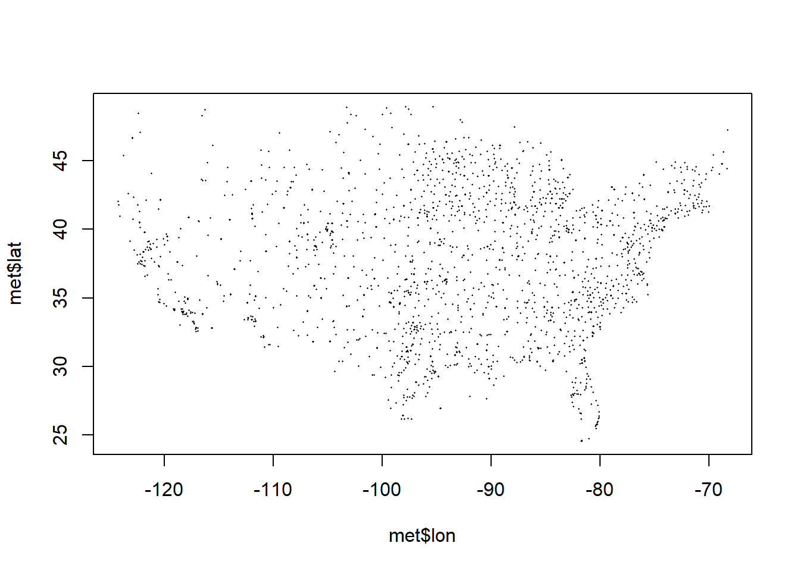
Are higher-elevation stations colder on average? To measure this without plotting all 230,000+ observations, we can sort the observations into bins based on their elevation:
elevations <- cut(met$elev, breaks = 10)
m <- tapply(met$temp, elevations , mean, na.rm = TRUE)
barplot(m, las = 2, xlab = "Elevation bin", ylab = "Mean temperature (°C)")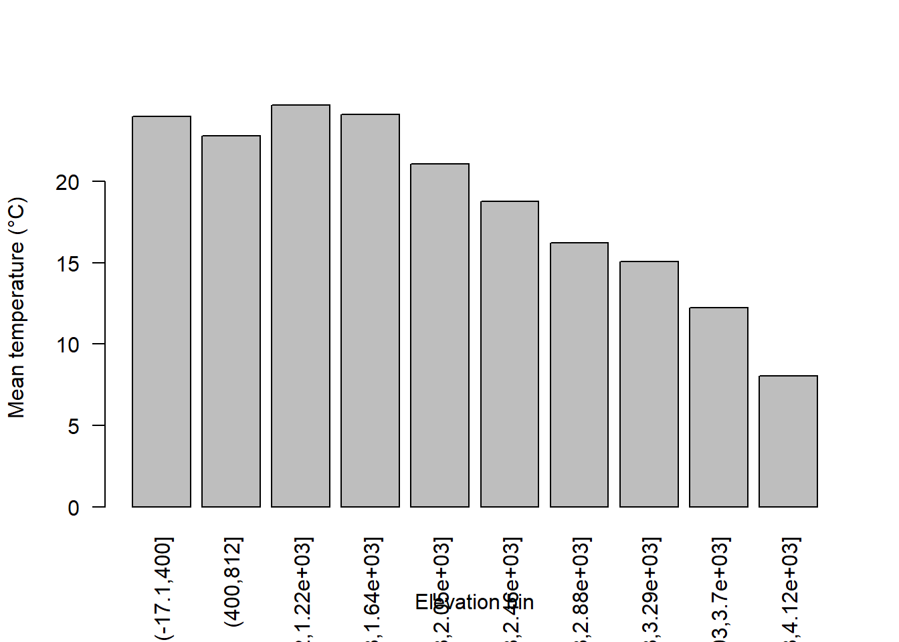
This bar plot shows us that higher elevations indeed tend to have colder temperatures in their observations.
names(met) [1] "USAFID" "WBAN" "year"
[4] "month" "day" "hour"
[7] "min" "lat" "lon"
[10] "elev" "wind.dir" "wind.dir.qc"
[13] "wind.type.code" "wind.sp" "wind.sp.qc"
[16] "ceiling.ht" "ceiling.ht.qc" "ceiling.ht.method"
[19] "sky.cond" "vis.dist" "vis.dist.qc"
[22] "vis.var" "vis.var.qc" "temp"
[25] "temp.qc" "dew.point" "dew.point.qc"
[28] "atm.press" "atm.press.qc" "rh"
[31] "station_id" Finally, what are the correlations between variables? We can use a correlation heatmap to visualize this:
num <- met[sapply(met, is.numeric)]
# Keep columns with a nonzero standard deviation
keep <- sapply(num, function(x) sd(x, na.rm = TRUE) > 0)
num2 <- num[, keep]
C <- cor(num2, use = "complete.obs")
heatmap(C)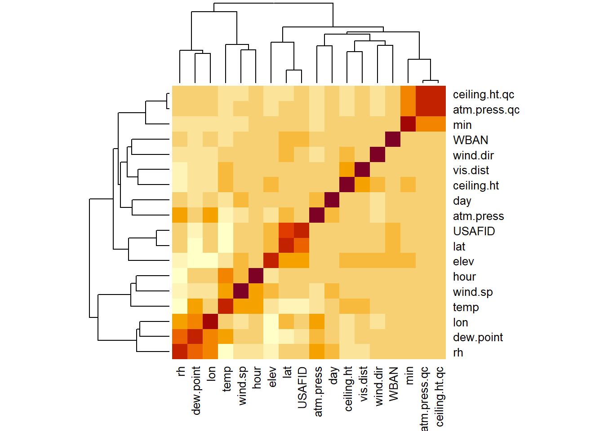
There appears to be a strong correlation between relative humidity (rh) and dew point (the temperature air must cool to for water vapor to condense), which makes sense scientifically. Also, latitude and longitude can sometimes be slightly correlated due to stations being located in certain places across the U.S. Interestingly, we also see a correlation between atmospheric pressure and relative humidity, which may be because pressure affects the density of water vapor, such that a lower pressure brings higher humidity and more rain.